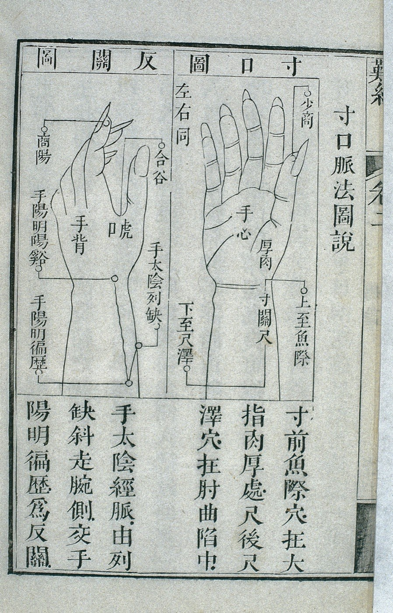
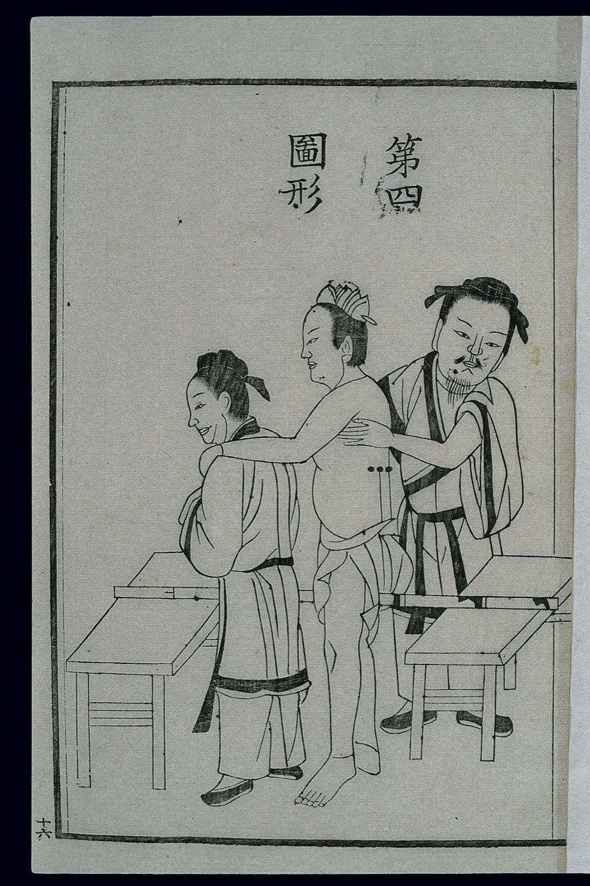
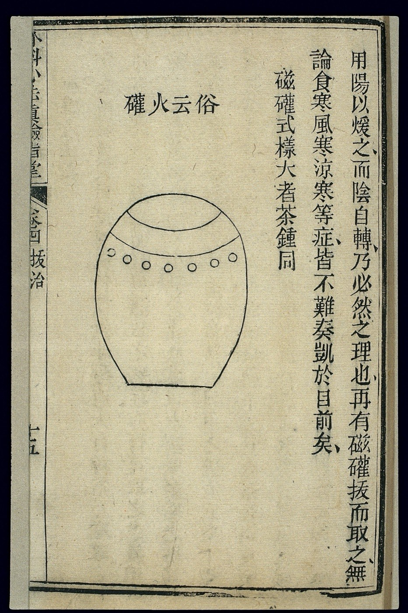
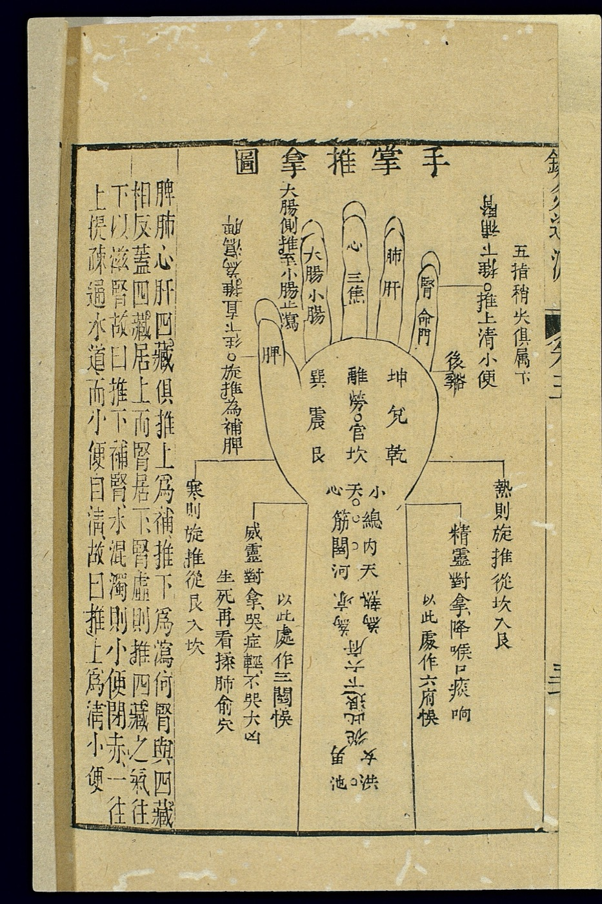
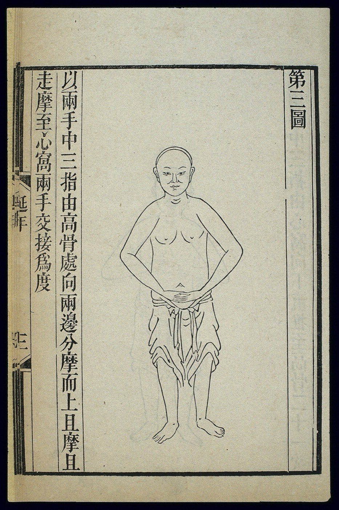

Zungen- und Pulsdiagnose
Die Grundlage aller weiteren Therapien. Zunge und Puls geben nach der Lehre der TCM Auskunft über den Zustand des ganzen Menschen und über die Ursachen von Beschwerden.
Traditionelle Chinesische Medizin ist eine über drei Jahrtausende gewachsene Heilkunde. Als ganzheitliche Medizin will sie die Schulmedizin ergänzen, nicht ersetzen. Im TCM Zentrum München behandelt Heilpraktiker Zhongwen Zhang.

Die Grundlage aller weiteren Therapien. Zunge und Puls geben nach der Lehre der TCM Auskunft über den Zustand des ganzen Menschen und über die Ursachen von Beschwerden.

Die TCM kennt 361 Punkte auf 14 Hauptmeridianen. In jeder Sitzung werden individuell ausgewählte Punkte genadelt. Nach der Vorstellung der TCM soll das die körpereigene Regulierung anregen. Die Akupunktur einer Körperseite dauert etwa 25 Minuten, eine Ganzkörperakupunktur von vorne und hinten etwa 55 Minuten.

Aus über 1.000 gebräuchlichen Heilkräutern stellt Zhongwen Zhang 10 bis 20 für Ihre Rezeptur zusammen und dosiert sie. Die Mischung trinken Sie etwa zwei Wochen lang täglich als Tee, dann passt er die Rezeptur neu an.

Getrocknetes Beifußkraut erwärmt ausgewählte Akupunkturpunkte. In China werden Nadel und Moxa unter dem Begriff „Zhenjiu“ zusammengefasst.

Vakuumgläser werden auf die Haut gesetzt. Schröpfen gehört zu den ältesten überlieferten Methoden der chinesischen Medizin.

Tui und Na, Schieben und Greifen, sind die beiden Haupthandgriffe dieser Massage. Sie wird bei uns von Frau Li angeboten.

Nach der Zungen- und Pulsdiagnose empfehlen wir Nahrungsmittel, die zu Ihrem Körperzustand passen, und raten von ungünstigen ab.

Ruhige Bewegungs- und Atemübungen aus der chinesischen Tradition. In Einzelstunden lernen Sie Übungen, die Sie zu Hause allein weiterführen können.

Yin und Yang stehen in der TCM für zwei Kräfte, die sich ergänzen: „sowohl als auch“ statt „entweder oder“. Gemeint ist das Gleichgewicht der Kräfte in der Natur und in uns selbst. Der zweite Grundsatz lautet „Hilfe zur Selbsthilfe“: Die Behandlung setzt auf die eigenen Kräfte des Körpers.
„Wenn es eilt, behandelt man das Symptom, sonst behandelt man die Ursache.“
Die Weltgesundheitsorganisation versteht Gesundheit als Zustand vollständigen körperlichen, geistigen und sozialen Wohlergehens, nicht nur als Fehlen von Krankheit. Ganz in diesem Sinn achtet die TCM auf das Befinden, nicht nur auf Befunde.

Leibniz sah in den Zeichen des Fuxi den „Ursprung der Dinge aus der Einheit und aus dem Nichts“ und erkannte darin seine dyadische Arithmetik wieder.
Ihre Therapie beginnt mit einer Zungen- und Pulsdiagnose bei Zhongwen Zhang. Termine in München und in Berg vereinbaren Sie telefonisch.
Die Behandlungen sind Privatleistungen und werden nach der Gebührenordnung für Heilpraktiker (GebüH) abgerechnet. Gesetzliche Krankenkassen übernehmen sie grundsätzlich nicht, private Kranken- und Zusatzversicherungen sowie die Beihilfe erstatten je nach Vertrag einen Teil. Bitte klären Sie das vor Beginn der Therapie mit Ihrer Versicherung. Bezahlt wird direkt nach jeder Behandlung, bar oder mit EC-Karte.
089 28 80 72 80Die Methoden der Traditionellen Chinesischen Medizin sind schulmedizinisch nicht anerkannt, ihre Wirkung ist wissenschaftlich nicht belegt. Sie ersetzen keine ärztliche Untersuchung oder Behandlung. Bei akuten oder ernsthaften Beschwerden wenden Sie sich bitte zuerst an Ihre Ärztin oder Ihren Arzt.